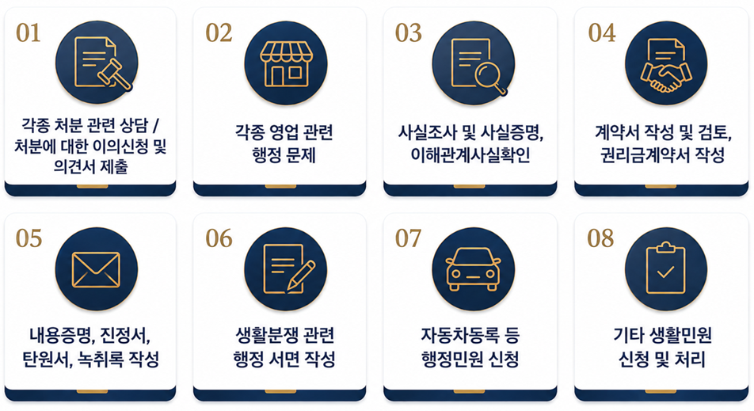
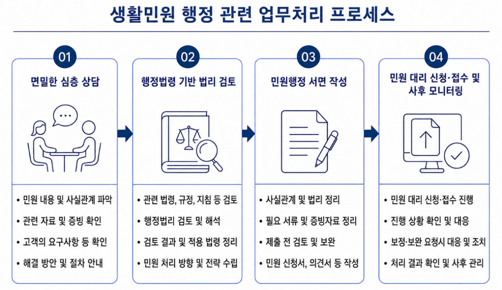

생활민원 행정
생활민원 행정이란,
국민이 일상생활 속에서 겪는 크고 작은 각종 행정적 문제와 당사자 사이의 권리·의무 관계에서 발생하는 갈등과 문제 등을 해결하기 위한 행정 컨설팅 서비스를 의미합니다.
아래의 생활민원별 다양한 분야처럼, 각종 억울한 행정처분과 행정문제, 복잡하고 까다로운 행정절차와 생소한 각종 행정 서면과 서류 등의 작성, 행정기관에 민원 신청 접수 및 사후 대응까지,
많은 분들이 어떤 행정 서면과 서류 등을 준비하고, 어떻게 행정절차를 진행해야 하는지, 자신의 행정권익을 주장하고 회복할 수 방법은 무엇인지 등에 대한 어려움을 겪고 있는 경우가 있습니다.

시그니처 행정사사무소는 일상생활과 밀접한 생활민원 행정업무와 관련하여 아래와 같은 생활민원 관련 업무처리 프로세스를 거쳐 의뢰인이 처한 개별 상황을 면밀히 검토하여 의뢰인의 행정편익을 증진하고 행정권익을 보호하기 위한 전문적인 생활민원 행정 컨설팅 서비스를 제공합니다.

“의뢰인의 일상생활 속 행정권익을 지키는 든든한 행정 파트너, 시그니처 행정사사무소가 함께 하겠습니다!”
지금 바로 상담 신청하세요!